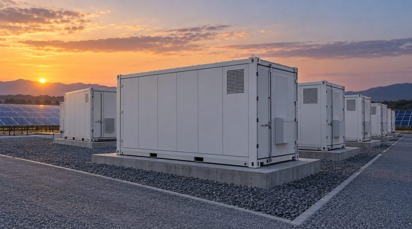
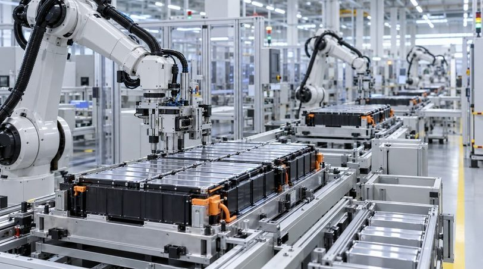
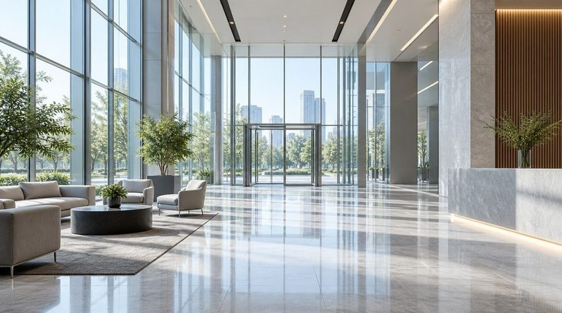
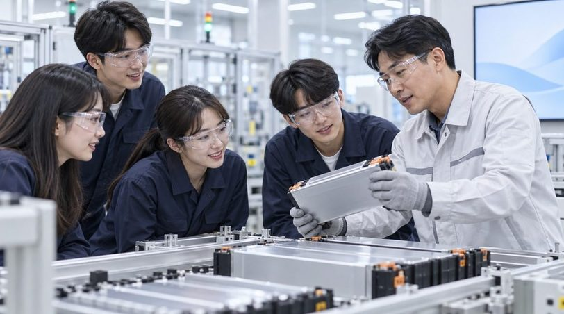
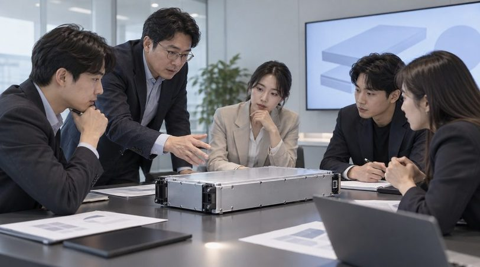
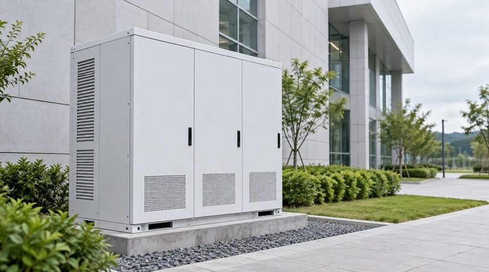
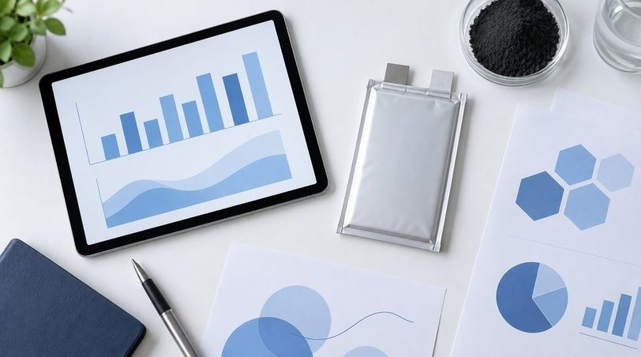
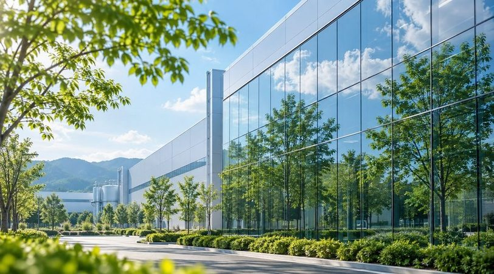
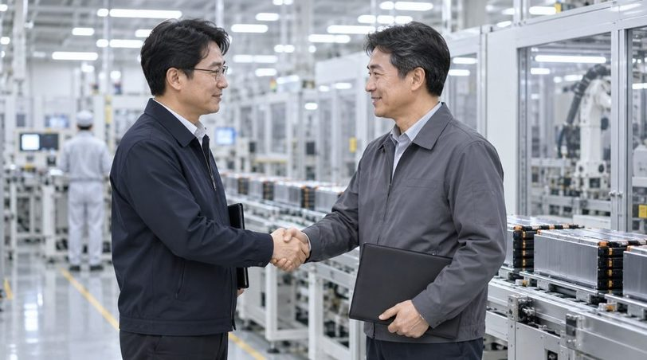
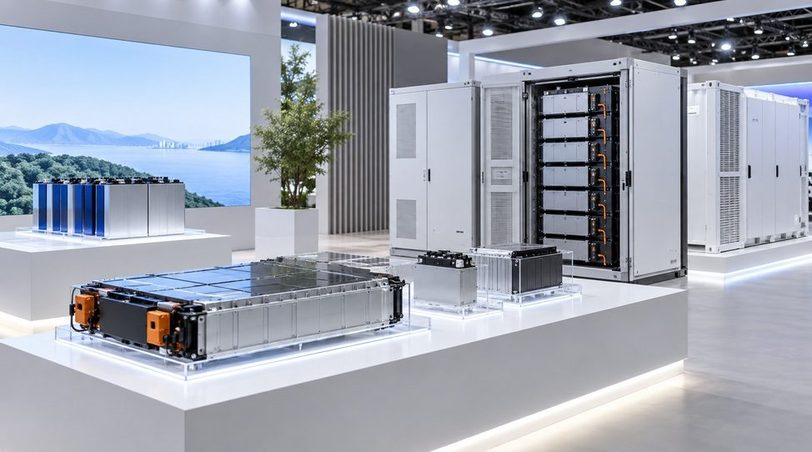

하이온셀, 국립대 연구팀과 고니켈 양극재 수명 연구 결과 발표
■ 공동 연구팀, 고니켈 양극재의 미세 균열 원인을 충전 속도에서 찾아 ■ 20Ah급 파우치 셀에 적용해 1,200회 충·방전 뒤 용량 91% 유지 ■ 연구 결과 국내 전지학회 추계 학술대회에서 발표
회사소개
하이온셀의 연구와 생산, 사업 소식을 확인하세요.
■ 공동 연구팀, 고니켈 양극재의 미세 균열 원인을 충전 속도에서 찾아 ■ 20Ah급 파우치 셀에 적용해 1,200회 충·방전 뒤 용량 91% 유지 ■ 연구 결과 국내 전지학회 추계 학술대회에서 발표

■ 상업시설용 100kWh급 ESS 모듈 3년간 공급 ■ 충북 제2공장 ESS 라인 가동률 높여 납기 맞춰 - 현지 설치 업체와 협력해 설치·점검까지 지원 ■ 하이온셀 “소형 ESS 시장에서 실적을 쌓아 나갈 것”

■ 17일 가동식 개최… 협력사·지역 관계자 60여 명 참석 ■ 연 1.2GWh 규모 ESS 모듈·재사용 팩 생산 거점으로 ■ 생산 공정 데이터를 모아 불량 원인을 바로 찾는 품질 관리 체계 갖춰

■ 상반기 ESS 매출 2.1배 성장… 신규 수주 420억 원 확보 - ESS 매출 비중 30%까지 확대 - 전기 운반차용 팩 공급 물량 꾸준히 늘어 ■ 하반기 제2공장 안정화와 유럽 기술지원 확대에 집중

■ 충북 지역 대학 두 곳과 배터리 공정 실습 과정 공동 운영 ■ 현장 실습·채용 연계형 교육으로 지역 인재 확보

■ 부품 협력사 25곳 참석… 품질 개선 사례 공유 ■ 셀 선별 기준과 검사 데이터를 협력사와 함께 활용하기로

■ 공공청사 비상전원용 ESS 12곳 설치 사업 맡아 ■ 설치 뒤 5년간 원격 모니터링과 정기 점검까지 수행

하이온셀이 2026년 2분기 잠정 실적을 발표했다. 매출 680억 원, 영업이익 52억 원이다. 전년 같은 기간보다 매출은 18% 늘었다.

■ 사업장 안전사고 0건 유지와 에너지 사용량 절감 성과 공개 ■ 사용 후 배터리 회수·재사용 실적을 처음으로 정리해 공개

■ 협력사 설비 개선과 인증 비용 일부 지원 ■ 하이온셀 품질 담당자가 협력사 공정 점검에 직접 참여

■ ‘작고 오래가는 ESS’를 주제로 랙 모듈·캐비닛 신제품 공개 ■ 폴란드 기술지원 사무소와 함께 현지 고객 상담 진행
검색 결과가 없습니다.